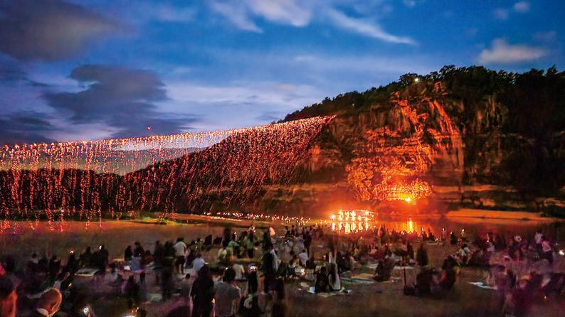
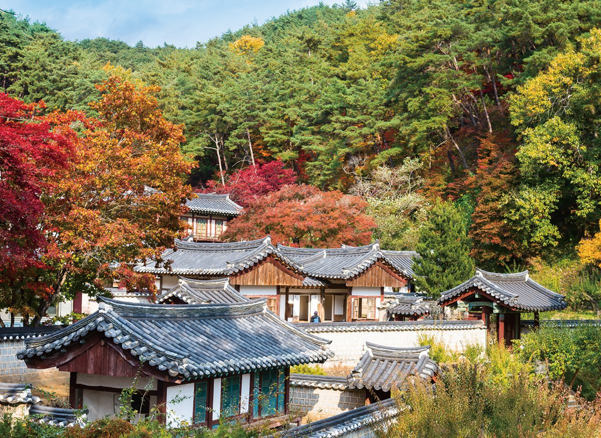
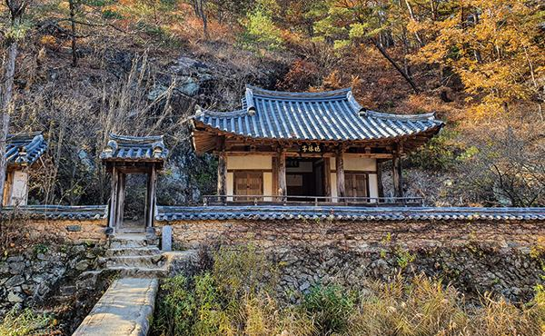
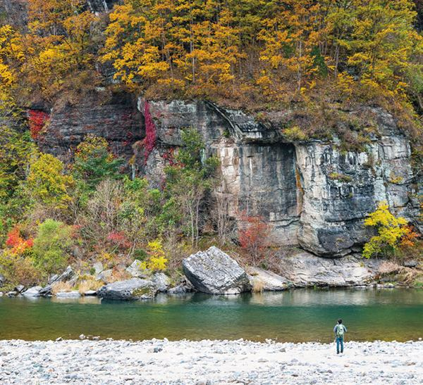
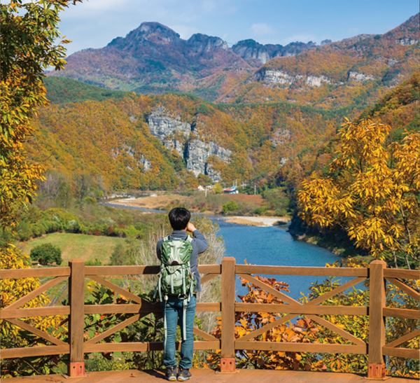

LIFE & CULTURE · TRAVEL MATE
시간이 키운 가을, 안동
3줄 요약
- 낙동강이 S자로 감싸 흐르는 하회마을과 농암종택·군자마을에서, 집과 풍경이 함께 나이 든 안동을 만난다.
- 도산서원·병산서원·봉정사의 마루에 앉아 가을볕과 정신문화의 깊이를 누린다.
- 월영교·만휴정·청량산전망대처럼 새로 주목받는 곳과, 6년째 안동에 사는 직원이 전하는 일상의 매력까지 담았다.
사흘 머물렀을 뿐인데 어느새 입에 착 달라붙는 “좋았니더!”. 안동의 진짜 매력은 이 투박한 방언의 온도를 닮았다. 낡았으나 품위 있는 고택의 그늘까지 가을로 물들어 아름다운 곳. 오래 쌓인 시간 위로 요즘의 낭만이 경쾌하게 포개져 더 찬란한 안동에서, 깊게 고인 가을을 누렸다. 온전하고 평온하게.
자연 속에 들어앉은 집들
오래된 집을 좋아한다. 낡은 기와와 휘어진 대들보, 손때 밴 마루를 보고 있으면 그 집이 품었을 시간이 궁금해진다. 그런데 안동의 오래된 집들은 조금 다르다. 집만 오래된 게 아니라 집을 둘러싼 산과 물, 나무와 마당까지 함께 나이를 먹었다. 그래서 집을 보면 풍경이 함께 보인다. 그 결이 가장 또렷한 곳이 하회마을이다.
하회마을은 낙동강이 마을을 ‘S’자로 휘감아 흐르는 곳이다. 물길이 마을을 감싸 안은 모양에서 하회라는 이름도 붙었다. 솟을대문 안쪽 고래등 같은 기와집부터 초가집 뒤란의 채마밭까지 곳곳에 오래된 것들이 가득해, 마을을 누리는 잠깐이 곧 시간을 즐기는 일인 곳이다. 관람 포인트는 고가옥 100여 호를 끼고 도는 고샅길과 강 건너편에 있는 부용대. 특히 굽이굽이 돌아나가는 낙동강을 끼고 앉은 마을을 한눈에 내려다볼 수 있는 부용대의 위용이 멋스럽다.
해가 기울고 어둠이 내려앉는 주말이면 하회마을은 보다 찬란해진다. 요즘 핫한 선유줄불놀이 덕분이다. 부용대와 만송정 사이에 줄을 걸고 숯봉에 불을 붙여 불씨를 흩날리는 줄불놀이는 800년을 살아낸 풍경이다. 그 빨간 불씨가 강물 위를 파르르 날면 일대가 온통 환해진다. 마치 붉은 윤슬 속처럼.

볼수록 아름다운 고택은 하회마을 밖에도 수없다. 수애당, 농암종택, 군자마을, 임청각, 치암고택 등. 그중 가을이 깊이 들어앉은 곳은 농암종택과 군자마을이다. 강 건너 기암절벽을 마주한 농암종택은 사방이 산으로 둘러싸인 진짜 ‘가을 속의 집’이다. 어디에 어떤 방향으로 앉고 서고 눕건 가을이 사람을 향해 눈짓한다. 안동호를 발치에 둔 군자마을도 오래된 기와 위로 단풍 그늘이 내리는 곳. 달빛 그윽한 밤엔 문틈으로도 단풍 그림자가 깃들고, 쓰르르 쓰르르 귀뚜라미 소리가 스민다.
마루마다 가을볕 곱더라
많은 이들이 안동을 ‘한국 정신문화의 1번지’라 부른다. 그 뿌리에 도산서원이 있다. 도산서원은 퇴계 이황이 학덕을 쌓으며 유생들을 가르치기 위해 세운 도산서당 뒤편에 후학들이 세운 공간이다. 평소 애지중지했던 매(梅)화분에 물을 주게 하고, 침상을 정돈시킨 뒤, 단정히 앉은 자세로 사망했다는 그의 정신과 마주할 수 있는 자리이기도 하다.

도산서원에 버금가는 정신유산이 또 있다. 많은 이들이 ‘병산서원’이라 쓰고 ‘마루’라 읽는 곳이다. 그만큼 마루가 가진 상징성이 크다. 어쩌면 이곳에서 마루는 그저 마루가 아니라 비워 채우는 철학의 공간일지도 모르겠다. 볕 좋은 가을날, 바람이 사방으로 통하는 입교당 마루에 앉아 만대루를 바라보라. 만대루는 낙동강가의 병산을 고스란히 품었다.
병산서원 입교당에 앉는 건 그래서 풍경 속에 그대로 들어앉는다는 뜻이다.
봉정사에 깃든 가을도 깊다. 봉정사는 목조 건축물의 보고다. 그중 백미는 고려시대 건물인 극락전. 굳이 ‘우리나라에서 가장 오래된’이라는 수식어를 붙이지 않아도 단아한 품새가 단연 눈길을 끈다. 봉정사를 갔다면 영산암도 빼놓을 수 없다. 영화 〈달마가 서쪽으로 간 까닭은〉의 무대로, 기어코 바위를 뚫고 나와 생을 틔운 소나무가 마음 한복판을 예고 없이 툭, 건드리는 곳이다.
볕 고운 가을날의 안부
오래된 공간이 재생되거나 재조명받으면 순식간에 ‘핫’해지기 일쑤다. 월영교와 만휴정, 고산정이 그렇다. 월영교는 가을밤 운치 있게 내뿜는 분수와 함께 걸으며 야경을 즐길 수 있는 목책교(길이 387m). 새벽에도 물안개가 뽀얗게 돋아 몽환적인 풍경을 이룬다. 최근에는 문보트까지 더해져 월영교 일대의 노란 가을이 더 ‘핫’해졌다.
월영교가 재생으로 ‘핫’해진 곳이라면, 만휴정과 고산정은 드라마 〈미스터 션샤인〉의 촬영지로 인기 만발인 곳이다. 조선 중기 문신인 김계행 선생이 낙향해 독서와 사색을 즐기기 위해 지었다는 만휴정은 송암폭포 절벽 위에 동그마니 올라앉았다. 낙동강을 사이에 두고 기암절벽과 마주한 고산정도 한눈에 봐도 절경이다.



햇살 따사로운 가을날엔 새롭게 주목받기 시작한 곳들로도 발걸음을 옮겨보자. 청량산전망대에서는 붉은 바람이 태어난다는 청량산이 한눈에 조망되고, 배롱나무꽃으로 유명한 체화정에서는 노란 은행잎이 눈처럼 흩날린다. 안동호 수면 위에 수상 덱을 놓아 만든 ‘선성수상길’의 부교(약 1㎞)에서는 은빛 윤슬 위를 밟으며 지날 수 있어 좋다.
“어땠니껴?” 언젠가 안동의 아무개 씨가 물었다. 그때 무람없이 툭 내뱉은 답이 “좋았니더!”였다. 그만큼 시간 듬뿍 밴 안동이란 동네의 가을이 좋았다. 〈미스터 션샤인〉 속 여주인공처럼 슬쩍 말 건네 볼 만큼. “(안동에서) 합시다, 러브”라고.
안동에 살아보니
전통과 자연, 삶의 여유가 깊게 익어가는 안동 — 김진근 경북본부 전략경영부 차장
안동으로 발령을 받아 가족과 함께 이곳에 터를 잡은 지 어느덧 6년이라는 시간이 흘렀다. 다소 생소했던 도시였지만, 이제는 나와 우리 가족에게 그 어떤 곳보다 따뜻하고 단단한 삶의 터전이 되어주었다.
많은 이들이 안동이라고 하면 하회마을이나 병산서원 같은 유교문화의 본향, 혹은 ‘양반의 도시’라는 고풍스러운 이미지를 가장 먼저 떠올린다. 물론 틀린 말은 아니다. 하지만 안동 주민으로서 내가 느낀 안동은 과거에 머물러 있는 도시가 아니라 역사와 자연, 그리고 일상의 여유가 조화를 이루며 매 순간 깊은 울림을 주는 매력적인 도시이다.
안동에서의 일상은 낙동강의 유유한 흐름과 함께 시작한다. 퇴근길이나 주말이면 강변을 따라 잘 조성된 산책로를 걸으며 하루의 피로를 씻어내곤 한다. 해 질 무렵 월영교에 불빛이 하나둘 들어오기 시작하면 강물 위에 반사되는 야경은 외국의 명소 부럽지 않을 만큼 황홀한 장관을 연출한다.
먹거리 또한 안동을 찾아오게 만드는 또 하나의 큰 즐거움이다. 깊은 풍미와 긴 전통을 자랑하는 안동찜닭은 물론이고, 짭조름한 간고등어 구이와 옛 유생들의 지혜가 담겨 있는 헛제삿밥은 이곳에 살면서도 질리지 않는 영혼의 음식이다. 안동은 화려함보다는 깊이를, 바쁨보다는 여유를 선사하는 도시이다. 이번 주말, 소중한 사람들과 안동으로 여행을 떠나보는 것은 어떨까.